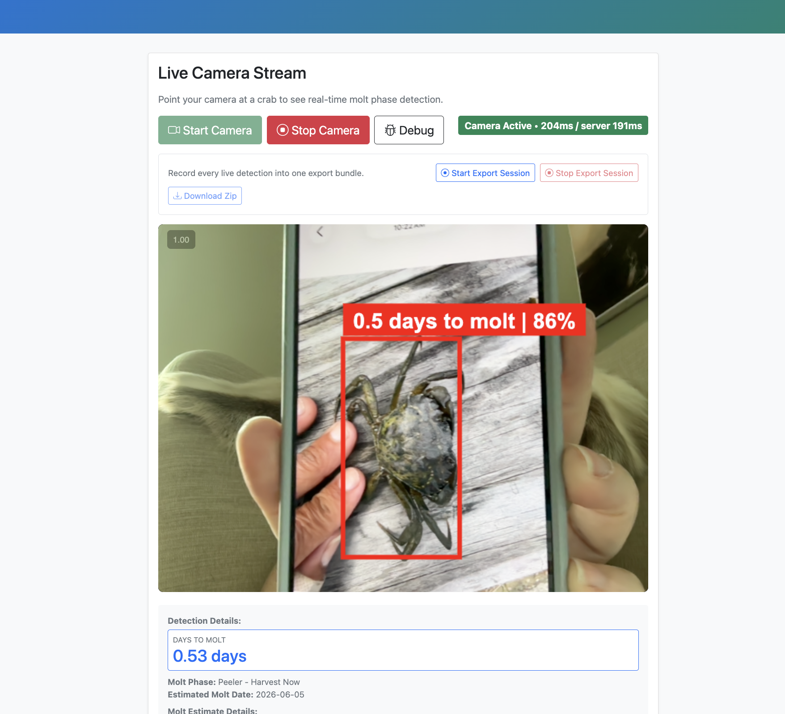

Bootstrapping the detector and running the app now
A practical deck on how the SAM3 bootstrap pipeline was built, what the current bootstrapv1 app does, and what comes next after the top1 update.

Field images were too messy for the original detector
What was happening
- Single crabs in hand, coolers, trays, and cages were easy for humans but noisy for the model.
- The detector produced false positives on gloves, people, and edges of equipment.
- Partial crabs and crab legs created messy candidate boxes.
Bootstrap goal
- Use SAM3 to propose candidate crab boxes from raw field images.
- Review the proposals, keep the good ones, and export them as YOLO labels.
- Train a stronger field-domain detector from those reviewed labels and hard negatives.
The bootstrap loop is proposal, review, export, retrain
data/raw/Green Crab AI 2026 and related folders.Two-track bootstrap plan
- Detector track: keep YOLO to one crab class and improve negatives.
- Estimator track: keep molt estimation separate, then decide whether aux tags help there.
Best practice from the repo notes
- Do not train on dogfood images.
- Use the reviewed SAM3 set to capture hard negatives.
- Prefer top-1 / clean bbox labels over noisy multi-box clutter.
Extended SAM3 prompts help us see what the model confuses
Prompt set used for the extended run
Green crab, dorsal, ventral, side, male, female, human, oyster, cage, equipment, table, tray, vegetation.
- Crab prompts expose missing detections.
- Negative prompts expose what the detector should ignore.
- Review-time tags preserve view and quality context without turning the detector into a multi-task model too early.

The top1 checkpoint is the stable bootstrapv1 model now copied into models/
Top1 validation numbers
| Metric | Value | Epoch |
|---|---|---|
| Precision | 0.78369 | 19 |
| Recall | 0.77941 | 19 |
| mAP50 | 0.83506 | 19 |
| mAP50-95 | 0.58825 | 19 |
The stable file is models/bootstrapv1_detector_best.pt, copied from the top1 run.

Current app flow: upload or stream, detect, crop, estimate, overlay
User-facing flow
- Photo upload uses `/predict`.
- Live camera uses `/predict_stream`.
- The app shows a descriptive model label instead of raw internal names.
- Overlay and response metadata include bbox and estimate timing fields.
Current deployment settings
YOLO_MODEL_PATH=models/bootstrapv1_detector_best.ptYOLO_CONF_MIN=0.45,YOLO_NMS_IOU=0.35YOLO_MAX_DETECTIONS=10STREAM_YOLO_IMGSZ=416,STREAM_CACHE_TTL_MS=800STREAM_ESTIMATE_EVERY_MS=1000
The live video path is tuned for lower CPU latency
Browser side
- Capture camera frames every 200 ms.
- Downscale frames before upload to keep payloads small.
- Send compressed JPEG instead of full-resolution frames.
Server side
- Run YOLO at 416 px for the stream path.
- Reuse the last good bbox and estimate briefly if the crab stays stable.
- Throttle the full ViT estimate so the overlay stays responsive.

The next decision is detector hardening versus estimator tagging
After the detector updates
- Deploy the corrected detector locally first.
- Compare dogfood results on original images vs 416 px / quality 0.65 frames.
- Promote to Cloud Run once the latency and false positives are acceptable.
Then decide on the next training branch
- Restart SAM3 with tighter prompts and review-time tags if the detector still needs better negatives.
- Or move into a separate estimator MVP v2 with `view` and `sex` as downstream signals.
That is the clean sequence you asked to preserve: detector v2 first, then Cloud Run, then decide whether SAM3 gets restarted or the estimator gets a v2 pass.
Files behind this deck
Bootstrap pipeline
docs/BOOTSTRAP_DETECTOR_PIPELINE.md
Explains SAM3 proposals, review, YOLO export, and retraining.
Current app
app_fastapi.py
Implements upload and stream prediction, current detector settings, and overlay responses.
Current UI
templates/index.html
Implements the live video stream and overlay behavior.